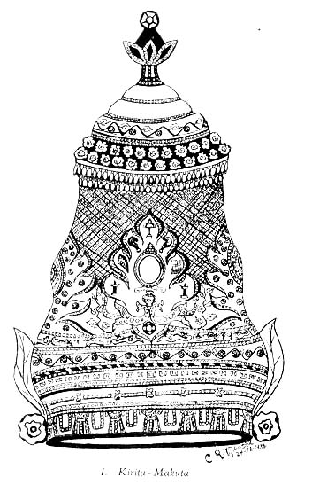
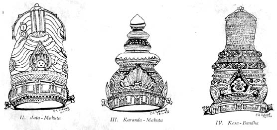

Head-Gears in Hindu Art
BY C. R. VYDIANATHAN
The tall and imposing crown of a deity or a king, the braided and ornamented hair of a goddess or a queen, have always been a special feature of Hindu Art. The Silpa texts furnish ample information about the technique of these head-gears. The Silpa-Ratna1 gives only a short account of this, while it is the Manasara2 that deals in elaborate detail with this topic and gives a complete description of all forms of moulis, in Chap. 49, pp. 313-321.
The common name of all head-gears used in the text is makuta or mouli and it classifies them into the following: - 1. Jata-mouli, 2. Kirita-mouli, 3. Karanda-mouli, 4. Sirastrakam, 5. Kuntalam, 6. Kesa-bandham, 7. Dhammillam, and 8. Alaka- chudakam. Apart from these it mentions also 9. Patra-pattam, 10. Ratna-pattam and 11. Pushpa-pattam. Only the first four are crowns, properly speaking, while the next four are only the modes of dressing the hair, while the last three are really ornamental bands, though Pattam is a word commonly used with reference to diadems in general, and the crowning ceremony as Pattabhishekam, the queen associated with it being referred to as Patta-Mahishi or Pattarani.
Among Gods, for Brahma and Rudra, Jata-makuta is suitable according to Manasara. For Narayana, Kirita-makuta is the proper one and for the lesser deities (male) the Karanda-makuta is prescribed. For Manonmani (consort of Siva) it is the Jata-mouli while for Mandala (consort of Vishnu) it is the Kuntalam. For Saraswati and Savitri (consorts of Brahma) Kesa-bandham or Kuntalam is prescribed. In the case of all chief goddesses, as an alternative, Karanda-makuta can be used.
The text in Chap. 42, pp. 282-285, places all Rulers in 9 categories according to the extent of their dominions, and in Chap. 49, refers to the appropriate head-gears for them as well as their queens. The monarch whose territories extend to the four oceans and who is born in the Sun dynasty is referred to as Chakravarti or Sarvabhouma, while such an one born in the Moon dynasty is called Adhiraja. The next is the Maharaja who holds sway over three territories. Narendra is lord of only one territory, while Parshnika is king of half a territory, and possesses a fort. Pattadhara is lord of only one and a half mandala (mandala being a smaller extent of area than a rajya), while Mandalesa is lord over only one mandala and has a fort. Pattabhak is one whose extent of territory is only half a mandala and who possesses a fort. Praharaka is the lord of a fort and a number of towns, while the Astragraha has a fortress and holds sway over only a number of villages. In Chap. 49, Manasara prescribes the suitable head-gears for the kings and queens according to their power and position.
Among kings, for Sarvabhouma and Adhiraja, Kirita-makutas are prescribed. For Narendra it is Karanda-makuta while for parshnika it is Sirastrakam. But Chakravartins and others referred to above may also wear Karanda-makutas. For Pattadhara it is Patrapattam; for Mandalesa it is Ratna-pattam; and for Pattabhak it is Pushpa-pattam. For Praharaka and Astragrahi only Pushpa-malas (flower-garlands) are prescribed.
Among queens, for the queen of Chakravarti and Adhiraja it is Kuntalam, while for the queens of Narendra it is Kesa-bandham. For the queens of Parshnika, Pattadhara, Mandalesa, and Pattabhak it is the Dhammilla-makuta that is prescribed. For the queen of Praharaka and Astragrahi, it is the Alaka-chudaka that is given as suitable.

Coming to measurements, the height of the Kirita-makuta should be two or three times the length of the wearer’s face. The Makuta of Brahma and Siva should be one and three-fourths the length of the face. For other Devas one and half times their faces is the proper height of the crown. For Kinnaras and Yakshas it can be equal to the length of their faces, or one and a half times their faces. For all goddesses, twice the length of their faces should be the measurement. For all makutas, the width commencing from the bottom should be gradually made lesser and lesser towards the top. The base area should be equal to the cross-section of the head. The width at the top of the Kirita-makuta should be less by an eighth or a sixteenth from that of the base. The width of a Karanda-makuta at the top should be only one-half or one-third less than that at the base.
The height of the Makuta for Chakravarti should be equal to the girth of the head, while that of Maharaja one-sixteenth less; that of Narendra one-eighth less; that of Parshnika one-half. The height of the Makuta for the queen of Chakravarti and Adhiraja should be equal to two-thirds of the girth of her head, while the queens of lesser kings equal to the length of their faces, while if it is Dhammilla it is either three-fourths or half the length of the face only.
The amount of gold required for making the various Makutas is given. According to their weight, each category is divided into three grades in which the ‘uttama’ is the best, while the lesser weighted ones get preference according to their weights. The crowns are to be made for the anointing ceremony known as abhisheka. For Chakravarti, abhishekas are prescribed for different occasions and they are, 1. Prathamabhisheka, when he is crowned for the first time as the Yuvarajah or Rajah; 2. Mangalabhisheka, performed on auspicious occasions as the Aswamedhayagasamapthi; 3. Virabhisheka, when he has done deeds of valour; and 4. Vijayabhisheka, when he acquires new territories. The queens of the kings referred to here should have their Makutas out of one-half of the weight of gold employed for the Makuta of their lords. The uttama crown of Sarvabhouma weighs 2500 nishkas (nishka being equal to 16 mashas or blackgrams in weight), the middle variety weighs 2000 nishkas and the last one only 1500 nishkas. Proportionate reduction is effected in the case of lesser Rulers, and for the lowest (Pattabhak) it is only 100, 200, or 300.

The weight having been fixed in this way, the shapes of the various types mentioned are given. The measurements given for the crowns are from the top of the hair to the top of the makuta and the height of the Sikha-mani (crest-jewel) is not included and falls outside this. The respective shapes of the head-gears, as given by Manasara, is that the Jata-makuta should have the shape of Tripushpa (cucumber); the shape of the Kirita-makuta should be that of Venu-karna (bamboo-shoot) while that of Karanda-makuta should be like Sikhi-thunda (mountain peak); the shape of Sirastraka is given as Budbuda (bubble of water) while the shape of Dhammilla is that of Valli (creeper) and Alaka-chudaka lies on the scalp itself (keshantha) in ringlets.
The king’s crown is divided into twenty-six equal parts out of which 5 parts are occupied by the Phala-patta (crown’s fore-face); Chudam (crest of the tiara) occupies 10 parts, the Utsedham (elevation) 5 parts, and the Moolataram (base portion) 6 parts, while on the other hand the diadem of the Devas has been divided into twenty-nine equal parts as in the text, but the editor of the Manasara suggests that it should be thirty, as otherwise the total does not tally. The various parts can easily be identified in Fig. 1. The Sikha-mani (crest-jewel) is on top of all. The Kudmala (opening bud) comes next below and occupies 2 parts. Down below is the padma (lotus) having 1 part. The tunga-tara occupies 6 parts and has the agra-patta occupying half of that and the trivetraka below that is adorned with ratnaharas and muktaharas. The purita fills all the sides and occupie 9 parts. It has the appearance of tarangas (waves) and the middle is made into the shape of flowers and adorned with precious stones in their centres. The lower vetraka occupies one-third of the total height. It is adorned by makaras (fish) and also by the ratna-bandha. Ratna-haras and pearl garlands are hung from its lower portion. The base of the Kirita-makuta should be curved like a crescent (ardha-chandra) just above the forehead. The karna-patra and the karna-pushpa are placed on both sides and come just above the ears. At the back, in front of the purita there should be the Siras-chakra. It is the halo surrounding the head of divinity. The height of the Siras-chakra should be one-third of the height of the crown and should be in the shape of a wheel and adorned with precious stones.
The Ashtamangala (Fig. 1. centre) should find a place in all crowns on the galapatta (broad face of the crown). It consists of the following and is assigned places in the group. Srivatsa (mark on the chest of Vishnu) adorns the middle, while lower down is placed the Purna-kumbha (water-pot), and by the side of it Chamara (chouri), and Deepa (lamp). On the top of it should be placed the Chatra (umbrella), and Darpanam (mirror). The Swastika (cross-bands) and the Sankha (conch) can be placed on the right and left. The ashtamangala brings prosperity to the wearer and hence kings and queens are required to have it on their crowns, as also the deities.
The Jata-makuta (Fig. 2), should be looped at the top and is adorned with pattam. In the middle there should be the Sikhamani at the top, and sideways there should be jewels hanging down. Inside the jata, flowers should be worked (usually Dhurdhura are seen in the jata of Siva) and the rest of the decoration is as in the case of Kirita-makuta with the various bandhas and ornaments. Like Jata-makuta, Kesa-bandha (Fig. 4), should be tied in the middle firmly with a patta (band). On the top of it there should be stages of hair which is to be given a twisted appearance and curled at those stages. The rest is as aforesaid and should be adorned with all alamkaras. Likewise Kuntalam should be tied in the middle and should be twisted as in the case of the former but in small spiral curls throughout. On the top of it there should be the Sikhamani and in the middle of it there should rise the bud. The agra-tara should be one-third portion and should occupy the same length as the bud and should resemble a bow in appearance. There should be for the Karanda-makuta (Fig. 3), either 3 or 4 bands in the tara and it should have the vetra and the padma and on the top of it the kudmala. The rest is similar. The width of the Dhammilla at the top should be one-third of that at the base and the width at the base three-fifths of the girth of the head. There should be 3 rings, out the Sikhamani is absent as also the karna-puraka. Sirastraka is also done likewise, with this difference, that it has the Sikhamani as well as the karna-purita. For the Alaka-chudaka, at the bottom there should be jewelled bands containing precious stones. The top and the base as also the middle should be of the same measurement. The heads should be rounded off by one-third and adorned with navaratnas. The Patra-pattam should be like the phala-patta and is only a circular band made of ten gold leaves and studded with precious stones. The ratna-pattam is made of navaratnas while the pushpa-pattam should be made with floral designs and adorned with varieties of gold flowers.
The Jata-makuta is more elaborately described in the Uttara-kamikagama.3 This makuta is made up of jatas or matted locks. Five jatas are taken and tied into a knot, three angulas in height, by circling the braids into one or three loops, the remaining braids being bound and taken through and left hanging on both sides. This makuta should also be adorned with a number of ornamental discs like the makara-kuta, patra-kuta, and the ratna-kuta, and on the four sides there should be the puritas. As an alternative there can be patra-kutas on the two sides, while at the back ratna-kutas. The breadth of the head-gear at the base should be that of the face and the top ten angulas. If it is for Brahma this is sufficient, but for Siva the crescent of the moon is to be worked either on the left or on the right and there is to be a cobra on the left side, while Silpa-Ratna says there should be the Ganges on the jata of Sambhu.
According to Silpa-Ratna the Kirita can have have the shape of either an egg (Anda), lotus (Kamala), umbrella (Chatra), or tortoise (Kamata). In the case of Jata-makuta it should be made of equal tresses on both sides so that they pair. Beginning with a length of 32 angulas (angula is a finger’s breadth and is equal to 8 barley corns) the makuta can be raised to 61 angulas in the aggregate. The jatas at the base should be broader, and as it goes up should gradually become less so. The binding jata should have the breadth of the little finger. In the jata of Siva on top there should be the Ganges and it should be either 12 or 16 angulas in height and should have her hands in anjali-bandha (folded) over her heart. The figure should have feminine features and can wear Kirita-makuta or Kesa-bandha. For Karanda-makuta it should taper from the bottom upwards and end in a bud.
When we examine how far the above have been closely followed in actual practice, we see that the rules have been observed as regards the main characteristics but have been discarded in details. Individuality is displayed in the decorations to a very large extent and in course of time the real thing is forgotten and a mere ornament is substituted in its place, as is evidenced by the ashtamangala. In the crowns I had occasion so far to examine, whether they be in the existing temples or old bronzes and sculptures, the ashtamangala has been made an ornament in the centre of the galapatta decorated with precious stones but not with any of the articles mentioned in the Manasara. This is exactly what happened in the case of the Kirti-mukha as exists in temple art today. The Sikhamani is not to be seen at all, but all end with the bud. The Silpis have ingeniously incorporated in their works new shapes and types. Thus in all cases in which I had occasion to examine (with the kind permission of Dr. F. H. Gravely in the Madras Museum collections, for which I am thankful to him), no two crowns agree, though of the same type, with regard to the minutest details, but regarding the broad characteristics they are easily seen to resemble the distinct types. When the sculptors come to deal with the various avatars they bring in changes. The jatas of Siva are generally arranged in the form of jata-makuta but show other varieties such as jata-mandala, jata-bhara, and jata-bandha, differing in shapes according to various avatars of Siva. They put in a Sivalinga on the crown of Veerabhadra. In the case of Krishna with Rukmini and Satyabhama group, he is seen either with kesa-bandha or with kuntala. Parvati wears either jata-makuta, karanda-makuta, or kesa-bandha. Lakshmi is seen with kesa-bandha and Seeta with alaka-chudaka. Balasubrahmanya and Balakrishna have been represented with kesa-bandha generally, while in the case of the crawling Krishna a mere ‘condai’ is substituted. In the case of Kali and Veerabhadra the heads are adorned by tongues of flame called prabha-jwalas. This is a common feature in Kerala for every kind of crown, not only confined to temples or kings but even brought in the Katha-kali, but they are of a milder type called prabha-vali. The prabha-vali is carved along with the crown in all cases and richly ornamented and this has become a part and parcel of their crowns. Various other fashions are also seen to have been followed by the sculptors drawing freely from their imagination as well as from their knowledge of their homes and surroundings. Thus in the Kalyana-sundara-murti group the head of Meenakshi is adorned with a ‘condai’ and on either side is placed the Surya-prabha and the Chandra- prabha. In Mohini, a recent innovation into the realm of temple art, the hair is plaited like a snake (pannaga-veni) as is usual in the case of South Indian girls.
Turning our attention to the sculptures at Mamallapuram and other repositories of Pallava Art, it is seen that they are of the simplest workmanship like the Gupta crowns. But a change towards intricacies is noticeable in the early Chola types, and in the later Chola period the carvings and construction reach the climax. The shape of the Pallava Kirita-makuta is like a cone chopped off at its head, while its Chola counterpart bulges above the base. The crowns of Kerala resemble to a certain extent the Javanese crowns in their exuberance of ornamentation. The workmanship after the Chola period shows signs of decline, and though the modern sculptors stick to the Chola shape rather than to that of Pallava type, yet they have neither the simplicity of the Pallavas nor the beauty of the Cholas. Kerala has not forgotten its tradition of the reign of the Perumals of Chera in this respect, and continues still conservative, but the rest of South India has forgotten its heritage. Thus the head-gear of the present day has its moorings in the ancient shastras, but has been heavily coloured by changing fashions of the day from which the un-shastraically developed sculpture cannot escape so easily.
1
Silpa-Ratna of Sri Kumara. (Trivandrum Sanskrit Series. Edited by K. Sambasiva Sastri, 1929. Part II. Devanagari Script.)Sri Kumara, author of Silpa-Ratna, lived at the close of the 16th century A. D. He was a Kerala Brahmin belonging to Bhargava Gotra, and, as found in the closing colophon, was the son of Sri Rama. Reference is given to the place where he lived which is Chiramelkadu sanskritised by himself as "Sethurdwakanana-nivasakritadhivasam" a deja now found in the Talapalli Taluk in Cochin State. The second part of the Silpa-Ratna consists of 35 Chapters dealing with iconography and other allied matters.
2
Manasaram (Vastu Sastram) on Architecture and Sculpture. Vol. III (Sanskrit Text with Critical Notes. Edited by Prasanna Kumar Acharya, M.A. (Calcutta), Ph. D. (Leyden), D. Litt. (London). Published by The Oxford University Press, 1933. Devanagari Script.)This is a work of an unknown author on Vastu Sastra but found to exist in almost all Indian scripts. Manuscripts have been discovered in Devanagari script, and also in Telugu, Grantha and Malayalam scripts, copied and recopied, with parts missing in many places and hopelessly corrupted in other places, written on cadjan leaves as well as on paper. But all the same their very wide existence itself points to the importance of the work. The Sanskrit of the original is not a refined one, and the difficulty is only deepened by many undecipherable technical expressions, as may be expected in any scientific treatise. The editor of Manasara has taken pains to collect from all available sources the existing copies and edit them in a cogent manner. The work deals elaborately with the construction of temples and palaces and other matters incidental to Vastu Sastra. It gives reference to prior works on the subject. So, what-ever be the date of its composition, it certainly forms an authoritative compilation on the subject and is recognised as such throughout Hindu India.
3
Kamikagamam. Purva and Uttara published by Mayilai Alagappa Mudaliar, lyyamudaliar Veethi, Chindadripet, Madras. Kali era 5011. Soumya year. (Grantha script).Agamasastras govern temple worship, construction and rituals. Kamikagama as well as Karanagama belongs to the Saivaite section, while Vaikhanasa and Pancharatra belongs to the Vaishnavaite group.